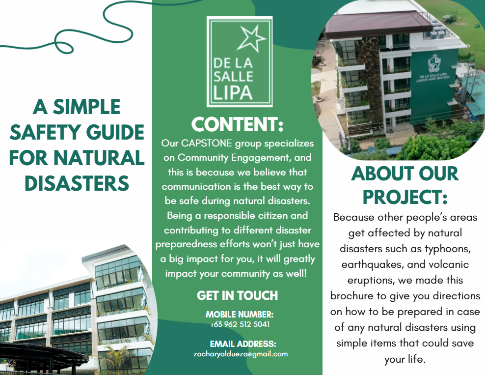

You might be wondering how, why, when, and many more questions. Our CAPSTONE group specializes in Community Engagement, and this is because we believe that communication is the best way to be safe during natural disasters. Being a responsible citizen and contributing to different disaster preparedness efforts won't just have a big impact on you, it will greatly impact your community as well! (+ our website is easy to access, + add about typhoon, earthquake, volcanic eruptions.)